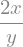

Use basic LaTeX syntax to write simple mathematical equations.
Use Sympy to calculate derivatives.
Propagate uncertainty for complex equations using the equation \[ \delta q = \sqrt{({\partial q \over \partial a} \delta a)^2 + ({\partial q \over \partial b} \delta b)^2 + \dots}\]
Background
Last week we learned about partial derivatives and how they can be used to calculate uncertainties in calculated quantities. The most important equation for propagation of uncertainty is \[ \delta q = \sqrt{({\partial q \over \partial a} \delta a)^2 + ({\partial q \over \partial b} \delta b)^2 + \dots}\] It’s not hard to find a situations that result in very difficult (and very messy) partial derivatives. This week we’ll continue to use this equation to propagate uncertainty but we’ll use Python to calculate the derivatives. Python can calculate derivatives for you using a module called sympy (short for symbolic python). To use sympy to calculate derivatives, follow the the following steps.
Step 1: Define the variables that are in the expression that you want to differentiate.
Step 2: Define the expression that you want to differentiate.
Step 3: Use sympy’s diff function to perform the differentiation.
Step 4: Use subs to evaluate the derivative for given value of the variables.
To see how this works, let’s follow these steps to differentiate the following function. \[z(x,y) = {x^2 \over y}\]. Study the code cell below to see how this is done.
import sympy as spsp.init_printing(use_unicode =True)x,y = sp.symbols("x y") # Step 1: Define variables z = x**2/y # Step 2: Define expressiondisplay(z)zprime = sp.diff(z,x) # Step 3: Use 'diff' to differentiate.display(zprime)result = zprime.subs({x:5,y:3}) #Evaluate the derivative at x = 5, y = 3print(result)

10/3
Activity I: Exit Speed (50 pts)
Equipment needed:
Cannon and plunger
Spherical steel ball (projectile)
Meter Stick
Goal:
Determine the speed with which the projectile leaves the cannon for all three launch settings with their associated uncertainties.
Procedure:
Set your cannon on the floor or table and set the launch angle to \(90^\circ\) (straight up)
Measure the distance from where the sphere exits the launcher to the peak of its trajectory. Record the value and the uncertainty in the code cell provided below.
In the cell below, record the best value of “g” from the previous lab with its associated uncertainty.
You may remember the following kinematic equation: \[ v_f^2 = v_i^2 - 2 g h\]. Do the algebra needed to solve this equation for \(v_i\). Complete the equation below \[ v_i = \]
On line 9 of the code cell below, enter the expression you found in step 4 for the initial velocity. To calculate a square root, use sp.sqrt()
To calculate the uncertainty in the initial velocity, you need to take two derivatives of the function that you found in step 4; \({\partial v_i \over \partial g}\) and \({\partial v_i \over \partial h}\). Complete the mathematical statements below with the expressions for these derivatives. \[{\partial v_i \over \partial g} = \]\[{\partial v_i \over \partial h} = \]
Now execute the cell below and compare python’s derivatives to your hand-written ones.
The expression for uncertainty propagation for \(v_i\) is \[ \delta v_i = \sqrt{({\partial v_i \over \partial g} \delta g)^2 + ({\partial v_i \over \partial h} \delta h)^2}\] This calculation is performed on line 17 in the code cell below. Study the code and ask questions so you can recreate this in activity II.
import sympy as sp# Launch Parametersh =# distance from exit point to peakun_h =# uncertainty of the distancegval =# acceleration due to gravity (refer to last week's results)un_g =# uncertainty in g (refer to last week's results)g,dh = sp.symbols("g Δh")vi =# Line 9. dvdg = sp.diff(vi,g) # Take the derivative with respect to g #Line 11dvdh = sp.diff(vi,dh) # Take the derivative with respect to h (distance to peak) #Line 12display(dvdg)display(dvdh)initialV = vi.subs({g:gval,dh:h})Δvi = sp.sqrt((dvdg.subs({g:gval,dh:h}) * un_g)**2+ (dvdy.subs({g:gval,dh:h}) * un_h)**2) # Line 17print("The initial velocity of the particle is: {0:4.1f} +/- {1:3.1f} m/s.".format(initialV,Δvi))
Activity II - Projectile Motion Prediction (50 points)
Equipment needed
Launcher Cannon
Spherical Steel Projectile
Meter Stick
Goal
Predict the landing location for a launched projectile with its associated uncertainty. Verify that observed results agree with your prediction to within your stated uncertainty.
Procedure
Setup
Set your cannon on a table and aim it in a direction so that the projectile won’t hit anything (or anyone).
Choose an initial launch angle and speed setting. Then adjust your cannon to match these choices. Record your launch angle with its associated uncertainty (in radians) in the code cell below.
Transfer the initial velocity and uncerainty that you found from activity I into the code cell below.
Measure the distance from the ground to the projectile’s point of exit. Record this number with its associated uncertainty in the code cell below.
Calculations
You may recall the following kinematic equations from your PH121 class. \[x_f = x_i + v_i \cos(\theta) t\]\[y_f = y_i + v_i \sin(\theta) t -{1\over 2} g t^2\] Use the second of these equations to find an expression for the projectile’s flight time in terms of \(y_i\), \(v_i\), \(\theta\), and \(g\). Fill in the equation below with your answer. Hint: You will have to solve a quadratic equation.\[ t = \]
Following the same pattern used on line 9 in the code cell above, enter the expression that you found in part 5 on line 18 of the code cell below. Use sp.sqrt() for square root expressions and sp.sin() for sine expressions.
To find the uncertainty in the flight time, you’ll need to evaluate four partial derivatives: \({\partial t \over \partial v_i}\), \({\partial t \over \partial \theta}\), \({\partial t \over \partial g}\), and \({\partial t \over \partial y_i}\). We’ll let python calculate these derivatives, following the same pattern shown in activity I. Fill in lines 20 - 23 in the code cell below with the appropriate code to calculate the four relevant derivatives. (They will look similar to lines 11 and 12 from the code cell above.)
The expression for the uncertainty in the flight time is given by:\[ \delta t = \sqrt{({\partial t \over \partial v_i} \delta v_i)^2 + ({\partial t \over \partial \theta} \delta \theta)^2 + ({\partial t \over \partial y_i} \delta y_i)^2 + ({\partial t \over \partial g} \delta g)^2}\] Fill in line 29 in the code cell below with the appropriate code to calculate this expression. (It will be similar to line 17 from the code cell above)
Now that you have the flight time with its uncertainty, you can use the first kinematic equation from above to calculate the projectile’s landing location. Fill in the equation below with an expression for the landing location \(x_f\) in terms of \(v_i\), \(\theta\), and \(t\). \[x_f = \]
To find the uncertainty in the landing location, you’ll need to evaluate three partial derivatives: \({\partial x_f \over \partial v_i}\), \({\partial x_f \over \partial \theta}\), and \({\partial x_f \over \partial t}\). We’ll let python calculate these derivatives, following the same pattern from activity I. Fill in lines 35 - 37 in the code cell below with the appropriate code to calculate the three relevant derivatives.(They will look similar to lines 11 and 12 from the code cell above.)
The expression for the uncertainty in the landing location:\[ \delta x_f = \sqrt{({\partial x_f \over \partial v_i} \delta v_i)^2 + ({\partial x_f \over \partial \theta} \delta \theta)^2 + ({\partial x_f \over \partial t} \delta t)^2}\] Fill in line 43 in the code cell below with the appropriate code to calculate this expression. (It will be similar to line 17 from the code cell above)
Evaluate the code cell below and observe the results. By experimenting with the uncertainties in measured values, can you determine which variable has the greatest affect on the uncertainty in the projectile’s landing location?
Experiment and Analysis
Put a piece of carbon paper on the floor at your predicted landing location. Draw a circle on the carbon paper to reflect the uncertainty in your prediction. Then launch the projectile and observe where it lands. Measure the distance to the landing location with its associated uncertainty and record it in the second code cell below. Put your names on the carbon paper and hand it in to B. Nelson.
Using a stop watch, measure the time of flight with it’s associated uncertainty. (Don’t forget to consider your reaction time when assigning the uncertainty.) Record these values in the code cell below.
Evaluate the second code cell below and, after observing the results, answer the following questions about your experiment in the area marked “Response” below:
Do your predictions and measurements agree to within your stated uncertainty?
If your observations did not match your predictions to within your stated uncertainties, comment on why you think it was?
Response:
Take a minute to inspect all of the code that I have given to you today. Ask questions about code that you don’t understand. As some point, you’ll have to recreate code like this on your own.
import sympy as spfrom matplotlib import pyplot as pltimport numpy as npinitialV =# Initial speed of projectile. δ_vi =# Uncertainty in initial speed of projectile.theta =# Launch angle (Must be in Radians!!)δ_θ =# Uncertainty in launch angle (Must be in radians)h =# Initial height of projectile (meters).δ_h =# Uncertainty in intial height (meters).grav =# Acceleration due to gravity (m/s^2). (Use value obtained in previous lab)δ_g =# Uncertainty in acceleration due to gravity (m/s^2)vi,θ,yi,g,t = sp.symbols("vi θ yi g t") # Define the symbols you'll need.# Quadratic formulatime =# Line 18dtdv =# Derivative with respect to vi (Line 20)dtdθ =# Derivative with respect to θ (Line 21)dtdy =# Derivative with respect to yi (Line 22)dtdg =# Derivative with respect to g (Line 23)values = {vi:initialV,θ:theta,yi:h,g:grav}#Plug in the values and calculate the flight time.tFlight= time.subs(values)#Plug in values to calculate uncertainty in flight time.δt =# Line 29values[t] = tFlight # Add flight time to dictionary of valuesxf =# define range function (Line 33)dxdvi =# Derivative with respect to vi (Line 35) dxdθ =# Derivative with respect to θ (Line 36)dxdt =# Derivative with respect to time (Line 37)landingloc = xf.subs(values) # Calculate landing location# Calculate uncertainty in landing locationδloc =# Line 43print("The flight time is: {0:4.1f} +/- {1:3.1f} s.".format(tFlight,δt))print("The landing location is: {0:4.1f} +- {1:3.1f} m.".format(landingloc,δloc))